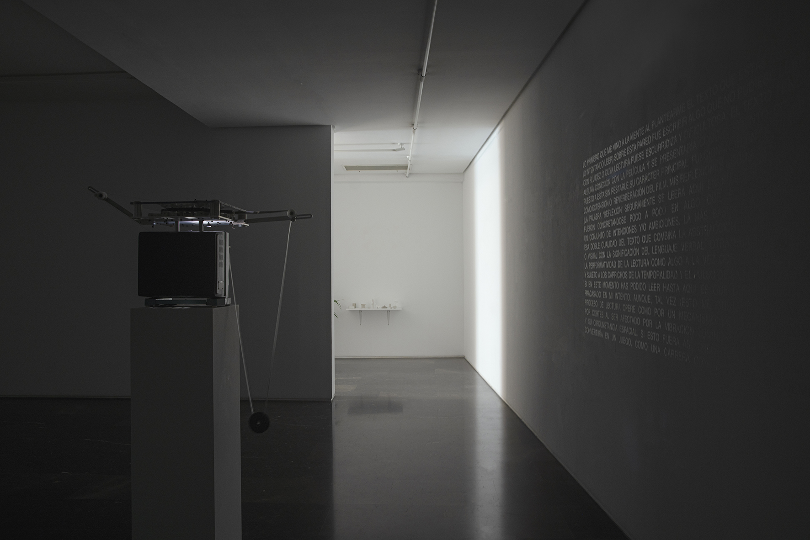
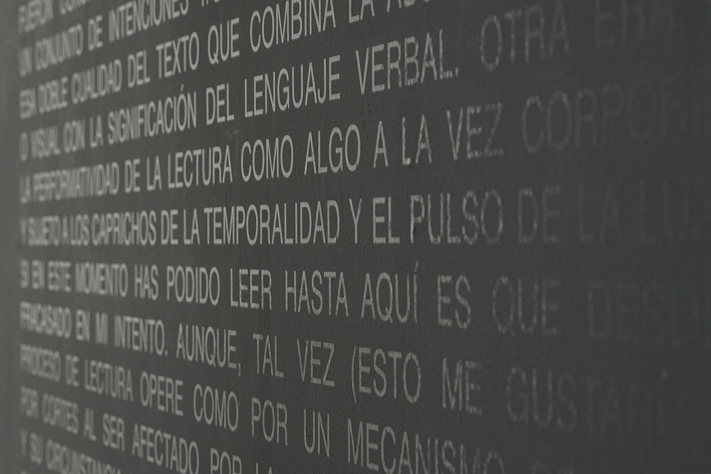
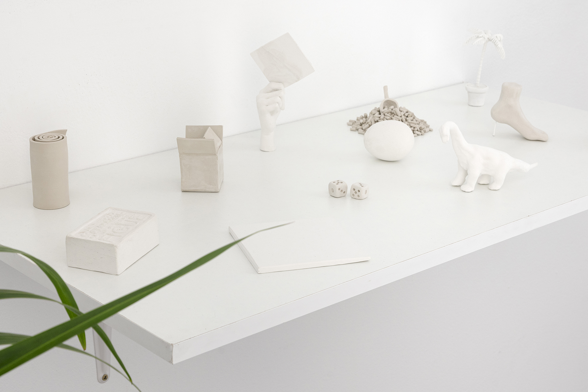
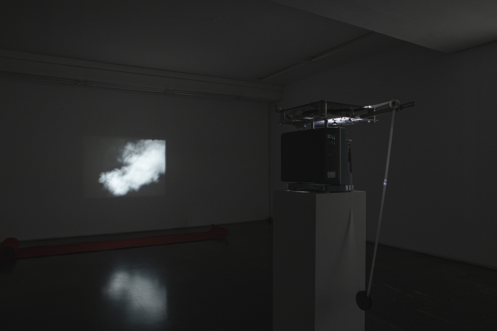
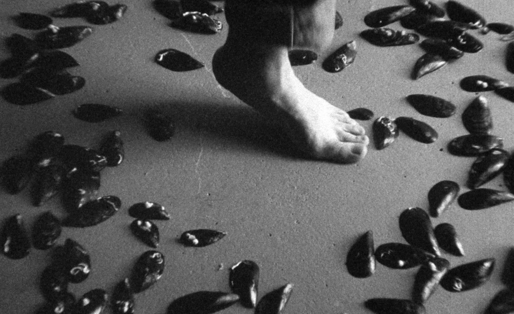
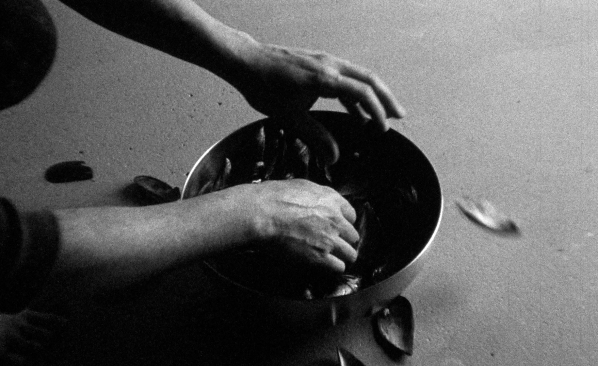
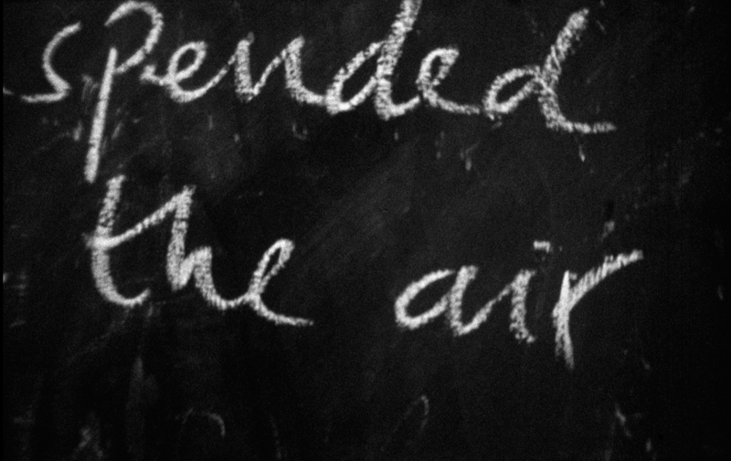
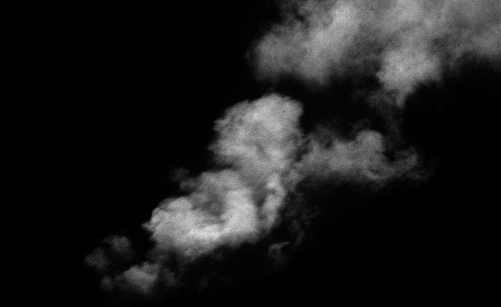
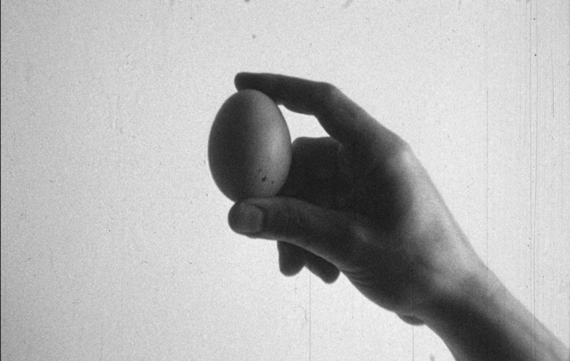

2022
Installation
Film (super16mm, 4 mins, b/w, silent)
Edited by Bruno Delgado Ramo
Transparent text on wall
12 mini sculptures (clay, plaster and resin)
Installation view pictures: Roto abierto/Broken Open Exhibition, Luis Adelantado, Valencia May-Aug 2022